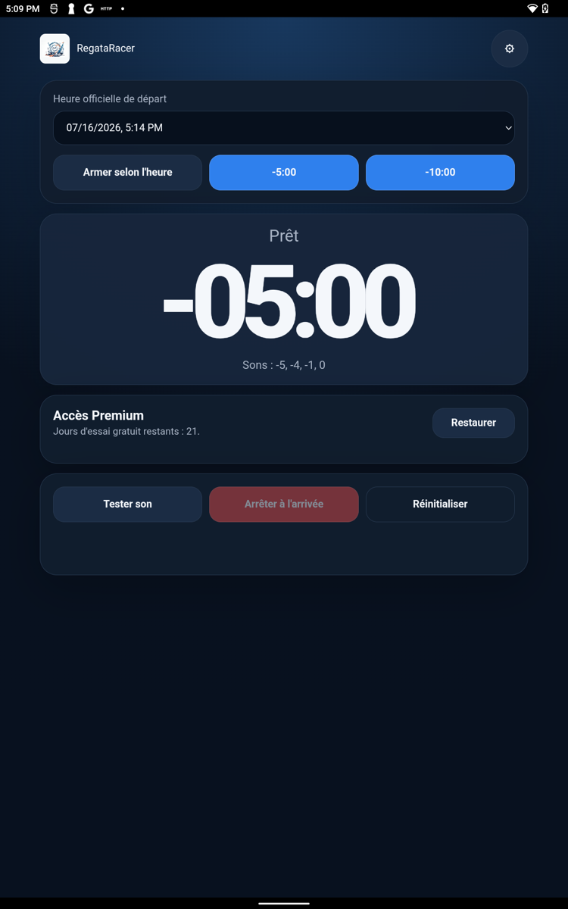
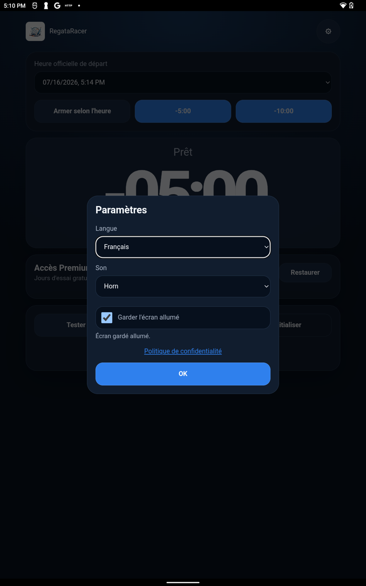

Très peu dispendieux
Profitez d’un véritable instrument nautique sans acheter un afficheur de départ spécialisé.
Chronomètre de départ de régate
Transformez le téléphone que vous utilisez peu pendant une régate en un instrument nautique abordable, pratique et beaucoup plus visuel qu’une montre. Son grand compte à rebours et ses signaux sonores vous gardent concentré sur la ligne.
Votre instrument de bord
Pas besoin d’un équipement spécialisé dispendieux : RegataRacer utilise l’écran que vous possédez déjà pour offrir une lecture plus grande, plus rapide et plus pratique qu’une montre.
Profitez d’un véritable instrument nautique sans acheter un afficheur de départ spécialisé.
Le grand affichage se consulte d’un coup d’œil, même en mouvement, sans rapprocher le poignet du visage.
Le téléphone, souvent peu utilisé pendant la régate, devient un chrono de départ pratique et dédié.
Si le signal du comité et le chrono ne sont plus parfaitement alignés, touchez deux fois le compte à rebours. Avant le départ, RegataRacer recale immédiatement le temps affiché sur la minute la plus proche.
Lancez immédiatement une séquence de 5 ou 10 minutes, ou armez le chrono selon l’heure officielle du comité.
Recevez des repères à −5, −4, −1 et 0 minute, avec le choix entre un son de corne et un bip.
Passez du français à l’anglais directement dans les paramètres de l’application.
Activez « Garder l’écran allumé » pour éviter la mise en veille pendant la séquence.
Arrêtez le chrono à l’arrivée et obtenez immédiatement le temps écoulé depuis le départ.
Aucune position à partager et aucun compte utilisateur à créer pour utiliser RegataRacer.
Version Android actuelle
Aperçus de la version actuelle de RegataRacer sur tablette, avec le compte à rebours mis en valeur en mode paysage.



Mode d’emploi
Ouvrez RegataRacer, placez l’écran bien en vue et activez le maintien de l’écran dans les paramètres.
Programmez l’heure officielle du départ ou choisissez un lancement immédiat à −5:00 ou −10:00.
L’écran affiche le temps restant et le prochain son. Au besoin, un double toucher sur le compte à rebours le recale précisément sur la minute la plus proche.
Appuyez sur « Arrêter à l’arrivée » pour connaître le temps écoulé depuis le signal de départ.
Accès Premium
La version Android prévoit ensuite un achat unique pour conserver l’accès permanent. Aucun renouvellement automatique.
Le projet vous intéresse?
Pour une question, une suggestion ou pour transformer votre téléphone en instrument de départ, écrivez-nous.